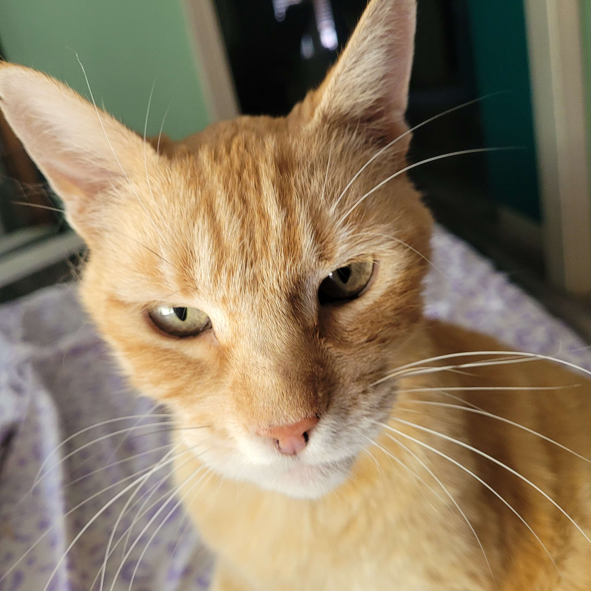

Foliver (also known as Oliver, Big Man, FatBoy, Garfield, etc) is a fat orange cat who spends most of his time outside, either sleeping in the sun or patrolling the neighborhood. He was adopted sometime in 2020, along with his brother, Digits. He loves attention and food, and will walk up to anyone who walks by our house to try and get pet.
